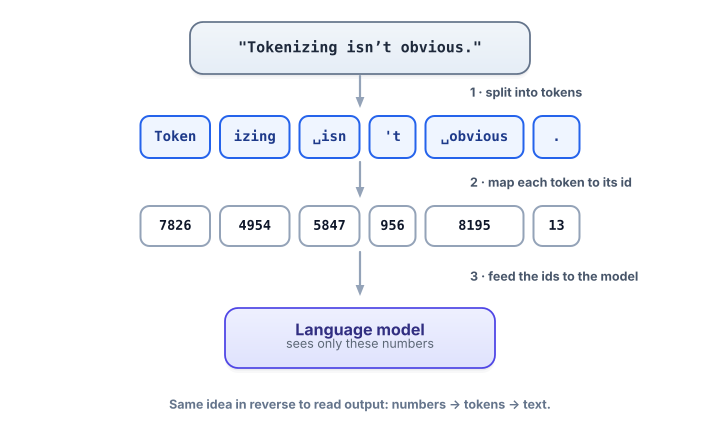

Tokens & tokenization
Tokens are the units everything is measured in — your costs, your context limits, your latency. They also explain a pile of “why did it do that?” behaviors. Spend twenty minutes here and a lot of mysteries dissolve.
Why you can’t skip tokens
In the last lesson we said models predict the next token. Tokens aren’t just an implementation detail — they’re the currency of this entire field. Three reasons they’re worth real attention:
- Money. Providers bill per token, not per word. Two prompts that look the same length can cost noticeably different amounts.
- Limits. A model’s context window (how much it can “see” at once, next lesson) is measured in tokens. Run over and your input gets cut off.
- Weird behavior. Why do models miscount the letters in “strawberry,” or handle some languages more expensively? Tokenization is the answer.
A token is a small chunk of text — often a whole common word, but sometimes a word-piece, a single character, or a punctuation mark. The fixed list of all tokens a model knows is its vocabulary (typically ~50,000–200,000 entries). A tokenizer is the tool that converts your text into tokens (and their numeric ids) on the way in, and converts tokens back to text on the way out.
Tokens are like LEGO bricks. Common words come as one big ready-made brick, and rare words have to be built from several small bricks. The model only ever sees the bricks, never the individual plastic dots, which is why counting letters is hard for it. The analogy breaks because LEGO bricks are fixed shapes for everyone, while each model family has its own brick set, so the same sentence can be a different number of tokens on two models.
Why chop words into pieces at all?
Two bad extremes make the reason clear. If every whole word were its own token, the vocabulary would be enormous and the model could never handle a word it hadn’t seen (a typo, a new product name, a rare medical term). If every single character were a token, the vocabulary would be tiny but sequences would be punishingly long and the model would waste effort relearning that “t-h-e” spells “the.”
Sub-word tokenization is the sweet spot. The most common scheme is byte-pair encoding (BPE): start from characters and repeatedly merge the most frequent adjacent pair into a new token, learned from data. Frequent words like “the” end up as one token; rare words get built from a few sub-word pieces. This way the model can represent any text, common things stay efficient, and the vocabulary stays a manageable size.

See it for yourself
Type anything below. Watch the token count, and notice where the splits fall — short common words stay whole, long or unusual words fragment, spaces ride along with the word that follows, and punctuation breaks off.
The demo above is an approximation. To see the real tokens a production tokenizer produces, run this (it’s free and needs no API key):
!pip install tiktoken
import tiktoken
enc = tiktoken.get_encoding("cl100k_base") # tokenizer used by the GPT-3.5/4 family
text = "Tokenizing isn't obvious."
ids = enc.encode(text)
print(len(ids), "tokens") # -> 7 tokens
print(ids) # the numeric ids
print([enc.decode([i]) for i in ids]) # the human-readable piecesTry swapping in your own sentences, a paragraph of code, and a sentence in another language. Compare the token counts — you’ll feel the cost differences directly.
Assume a marketplace wants every product description rewritten by an LLM: 40,000,000 descriptions, average 120 English words each, plus translations into five other languages. Numbers are assumptions; the method is the point.
- English input tokens. At about 0.75 words per token, 120 words is about 160 tokens. 40M x 160 = 6.4 billion tokens.
- Do not trust the rule of thumb for other scripts. Sample 1,000 real descriptions per language and count with the target model's tokenizer (for example
tiktokenfor OpenAI models). Suppose you measure 1.4x for Spanish and 2.5x for Hindi. Those multipliers are what you must budget, not the 4-characters rule. - Price one language. On Claude Sonnet 5.5 at $2 per million input tokens (Anthropic models overview), English input = 6.4B / 1M x $2 = $12,800. If outputs are similar length, at $10 per million output tokens that adds about $64,000.
- Batch it. This is an offline job, so the Batch API at 50% off halves both: about $38,400 for English in and out.
- Hindi costs more for the same meaning. At 2.5x tokens, the Hindi output alone is 2.5 x $64,000 x 0.5 (batch) = $80,000. Same products, same model, more than double the English bill.
- Act on it. Put a per-language token multiplier in the cost model, cap output length in the prompt, and re-measure if you switch model families, because the tokenizer changes with them.
There isn’t one universal tokenizer. Each model family ships its own (for example, OpenAI’s cl100k_base and the newer o200k_base; other labs use their own). So a “1,000-token” prompt for one model may count slightly differently on another. The concepts here are universal; the exact splits depend on the model.
The rules of thumb that pay off daily
| Rule of thumb | Why it matters on the job |
|---|---|
| ~4 characters ≈ 1 token in English (≈ ¾ of a word) | Quick mental math for “will this fit?” and “what will this cost?” 1,000 tokens ≈ 750 words. |
| A leading space is part of the token | "token" and " token" are different tokens. This subtly affects prompts and stop sequences. |
| Code, JSON, and unusual words use more tokens | Lots of punctuation and rare identifiers fragment heavily — budget more tokens for code-heavy prompts. |
| Many non-English languages cost more tokens | Scripts under-represented in training fragment into more pieces, so the same meaning costs more — a real fairness and budgeting issue. |
- A token is a chunk of text (often a word-piece); the model’s fixed list of them is its vocabulary.
- Sub-word tokenization (e.g. BPE) balances a manageable vocabulary against short sequences, and can represent any text.
- Tokens are the unit of cost, context limits, and latency — not words.
- Rule of thumb: ~4 characters ≈ 1 token in English; code and many languages cost more.
- Quirks to remember: leading spaces belong to tokens, and models see ids, not letters — which is why character-level tasks trip them up.
A user asks the model, “How many letter R’s are in ‘strawberry’?” and it answers “two.” Using tokenization, what’s the best explanation?
Why does 'strawberry' sometimes cost several tokens while 'the' costs one?
To stay under a 1,000-token input limit, your app cuts every user message at 4,000 characters. Some requests still fail with 'input too long'. Why?
1. Estimate (no tools) how many tokens are in: “The mitochondria is the powerhouse of the cell.” Then check with the demo. How close were you?
2. In Colab, tokenize the same sentence in English and in another language you know. Which costs more tokens, and why?
3. You have a model with a 8,000-token context window. You want to feed it a 30-page document (~12,000 words). Will it fit? Show your reasoning.
▸ Show solutions & reasoning
1. The sentence is 8 words and ~48 characters. At ~4 chars/token that’s roughly 11–13 tokens (common words stay whole; “mitochondria” and “powerhouse” may split). The point isn’t to be exact — it’s to build the reflex of estimating cost/space in tokens on sight.
2. Almost always the non-English version costs more, often much more, if its script is under-represented in the tokenizer’s training. The same meaning fragments into more sub-word pieces, so you pay more tokens for identical content — worth remembering when you build for a global audience.
3. 12,000 words × (1 token ÷ 0.75 words) ≈ 16,000 tokens. That’s double an 8,000-token window, so no, it won’t fit in one shot. This is exactly the problem that motivates chunking and RAG in Track 3: don’t stuff the whole document in — retrieve only the relevant pieces.
BPE is trained, not hand-written. Start by treating every character (technically every byte, so any text is representable) as a token. Then scan a large corpus and find the most frequent adjacent pair of tokens — say t followed by h. Merge it into a new token th, and add it to the vocabulary. Repeat: next maybe th+e → the, then common suffixes like ing, ed, tion. Keep going for tens of thousands of merges. The merges you’ve learned, applied in order, are the tokenizer.
This explains the quirks you saw. Frequent words become single tokens because they got merged early; rare words never earned a merge, so they stay in pieces. Leading spaces matter because the merges were learned over text where spaces precede words, so " the" (with its space) is its own learned token, distinct from "the". And because everything bottoms out at bytes, the tokenizer can encode emoji, code, and languages it barely saw — just less efficiently. When you later wonder why a prompt costs what it costs, you’re really asking which merges fired.
labs/01_generate_and_sample.pyFree and offline once set up: Ollama with qwen2.5:7b, plus the packages in labs/README.md. From the course folder:
python labs/01_generate_and_sample.pyWhat to look for: The lab prints prompt_eval_count and eval_count, which are qwen2.5:7b's real token counts. Send the same sentence in English and in another language (or a block of JSON) and compare prompt_eval_count. Note that this is Qwen's tokenizer, so counts will differ from tiktoken's cl100k_base numbers in the lesson.
▸ Recorded output (our run, 2026-11-03, qwen2.5:7b on a laptop GPU)
2) Same prompt, temperature 1.0, three different seeds
seed=1: Bengaluru in July typically experiences warm to hot temperatures with occasional thunderstorms.
seed=2: Bengaluru in July typically experiences hot and humid weather with occasional thunderstorms.
seed=3: Bengaluru in July typically experiences hot and dry weather with temperatures often soaring above 30°C.
distinct outputs at T=1.0: 3 (sampling -> usually 2-3)
3) Same seed twice at T=1.0 -> reproducible on the same machine
identical: True
4) Tokens are what you pay for: prompt vs output token counts
short prompt: prompt_tokens= 36 output_tokens= 2 prefill_s= 0.52 answer='Paris'
long prompt : prompt_tokens= 639 output_tokens= 2 prefill_s= 0.22 answer='Paris'
Look: the long prompt costs many more input tokens and more prefill time for the same answer.
5) Streaming: time-to-first-token (TTFT) vs total time
TTFT=0.36s total=2.54s chunks=16 decode_tokens_per_s=7.3
Look: streaming does not make generation faster; it shows the first words sooner.Your numbers will differ a little run to run. Full log: labs/outputs. Source: labs/01_generate_and_sample.py.
Warm-up. A 2,400-word English report goes into a prompt. Estimate the tokens, then say how much room is left in a 32,000-token window if you reserve 3,000 tokens for the answer and 800 for instructions.
▸ Solution
2,400 / 0.75 = 3,200 tokens. Used: 3,200 + 3,000 + 800 = 7,000. Left: 32,000 - 7,000 = 25,000 tokens. Treat it as an estimate and keep a 10% safety margin, because the real count depends on the tokenizer.
Transfer. You log 10,000 real user prompts and find the mean is 1,100 tokens on cl100k_base. You plan to switch to a model with a different tokenizer. What do you do before you trust your cost forecast?
▸ Solution
Re-tokenize a sample of those same prompts with the new model's tokenizer (or send them and read the usage fields) and compute the ratio. A different vocabulary can change counts noticeably, especially for code, non-English text, and numbers. Update the forecast with the measured ratio, per language if your traffic is mixed. Never carry token counts across model families on faith.
Stretch. Explain why the number 1234567 might be split into odd pieces and why that makes arithmetic hard, then propose a fix that does not need a bigger model.
▸ Solution
Tokenizers learn merges from frequency, so a long number can split into chunks like '123', '456', '7' that do not line up with place value, and two numbers of the same length may split differently. The model then has to do column arithmetic over chunks it never sees as digits. Fixes: give it a calculator tool, ask it to write the numbers digit by digit before computing, or do the maths in code and let the model only explain. A tool is the reliable one.
Junior What is a token and why do we care about it as engineers?
▸ Model answer
A token is a chunk of text from the model's fixed vocabulary, often a whole common word or a piece of a rarer one. The model reads and writes token ids, not characters. We care because tokens are how providers bill, how context windows are measured, and they drive latency since output is generated token by token. In English a token is about four characters or three quarters of a word, but code, JSON and many non-English scripts use more tokens for the same meaning.
Mid How does byte-pair encoding build a vocabulary, and what quirks does that cause in production?
▸ Model answer
BPE starts from bytes and repeatedly merges the most frequent adjacent pair into a new token, for tens of thousands of merges. Frequent words become single tokens; rare words stay split. Quirks: leading spaces are part of tokens, so ' yes' and 'yes' differ, which matters for stop sequences and logit bias; numbers split unevenly, which hurts arithmetic; letter-level tasks like counting characters are hard; and under-represented languages fragment, which raises cost and eats context. Because it works on bytes, it never fails to encode anything.
Senior You are building a multilingual product. How do tokenizers affect your cost model, fairness, and model choice?
▸ Model answer
Measure tokens per language on real traffic with each candidate model's tokenizer; the same meaning can cost 2x or more in some scripts. That changes the cost forecast, the context left for retrieval, and latency for those users, which is a fairness issue as well as a budget one. In model selection I would include tokens-per-meaning as a metric next to quality, cap output lengths per language, and consider models whose vocabularies cover the target scripts better. I would also make sure billing alerts and rate limits are set in tokens, not requests.
You can now reason in tokens. Next we’ll ask: what does the model do with a sequence of these tokens — how much can it hold at once, and how does it decide which earlier tokens matter? That’s context windows and attention… but first, the idea that gives tokens their meaning: embeddings.